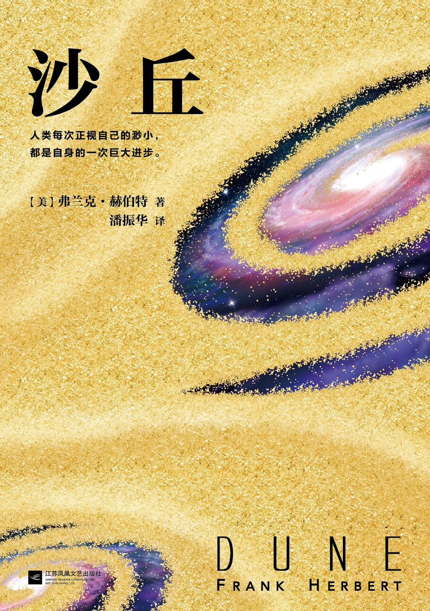
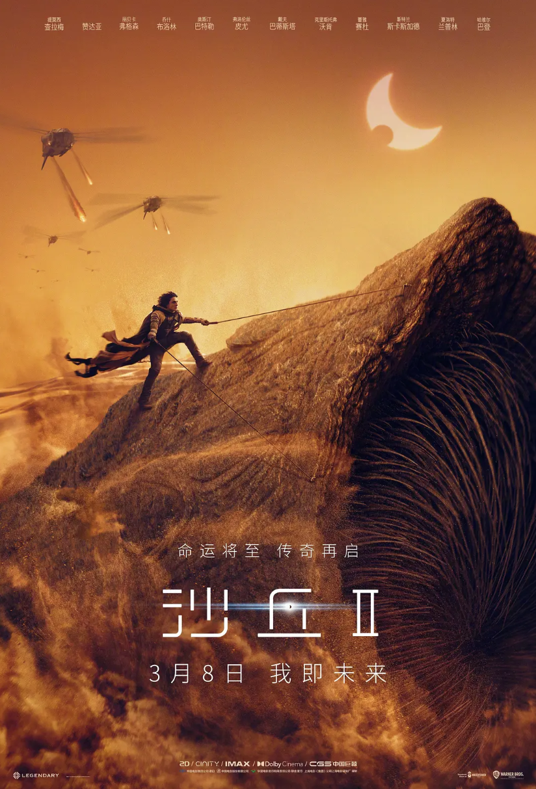

欢迎来到《沙丘》介绍页面
《沙丘》是弗兰克·赫伯特创作的经典科幻小说，同时也是一部改编成电影的作品。
这里内嵌了一个YouTube的视频，请在网络“良好”的前提下观看。
内嵌Bilibili视频有些许问题。
沙丘 Dune
《沙丘》是美国科幻作家弗兰克·赫伯特（Frank Herbert）创作的一部长篇小说，讲述了发生在未来宇宙中的权力斗争、生态问题、宗教信仰与个人成长的史诗故事。这部作品被认为是科幻文学的巅峰之作，电影版同样在视觉和叙事上具有极高的影响力。
在遥远的未来，人类文明已经扩展到了银河系各个角落，形成了一个庞大的帝国体系。帝国的统治者是一位名叫帝国皇帝的皇帝，他的权力来自于一种叫做“香料”的物质，这种物质在宇宙中非常稀有，具有强大的药用和心灵扩展效果。

沙丘电影 Dune Movie
《沙丘》电影由丹尼斯·维伦纽瓦（Denis Villeneuve）执导，改编自弗兰克·赫伯特的同名小说。电影讲述了保罗·厄崔迪（Paul Atreides）在沙丘星球上的冒险和成长故事。
电影版《沙丘》以其壮观的视觉效果和深刻的情感描写而著称，获得了广泛的好评和多个奖项。
